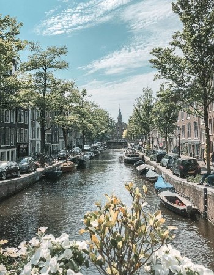
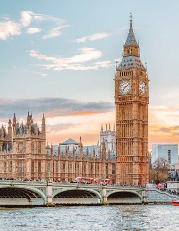

Amsterdam |
Paris |
London |
 |
 |
 |
Legalized prostitution, cannabis coffee shops, and drug dealers on every corner--these are some typical things that may come to mind when one thinks of Amsterdam, “the city of sin”. Although all of these things do exist in the Dutch capital, the city of Amsterdam is much larger than The Red Light District and has a lot more to offer. The city and port, which is over seven hundred years old, has a rich history, beautiful art collections, and great food. Welcoming millions of visitors every year, Amsterdam is truly a great place to visit. |
Looking out at the sparkling Eiffel Tower over an exquisite French meal and a glass of wine, strolling down the Champs Elysees in an impeccable outfit with designer labeled bags in one hand and a crumbling pastry in the other--Paris is an iconic place to visit for fashionistas and food lovers alike. The city has so much to offer--beautiful gardens, extraordinary buildings and structures, art galleries and museums, adorable cafes, and top cuisine--it is no wonder why this romantic and cultural city is such a popular destination for tourists, artists, and newly-weds. |
Who wouldn’t want to enjoy a traditional English afternoon tea with Queen Elizabeth II in Buckingham Palace? Or at least tour the rooms where the Queen undoubtedly has drunk many cups of her favorite Earl Grey tea? How about a ride on a red double-decker bus filled with loud, fanny-packed tourists taking hundreds of pictures of the Tower Bridge and the Big Ben? Or a moment to pretend to make an important--potentially world-saving--phone call in a tiny red booth? Well, it's all possible--except for the queen part--in the beautiful city of London, which attracts over 30 million visitors like you and me each year |
Click here to discover more about Amsterdam! |
Click here for more information Paris! |
Click here to explore London! |